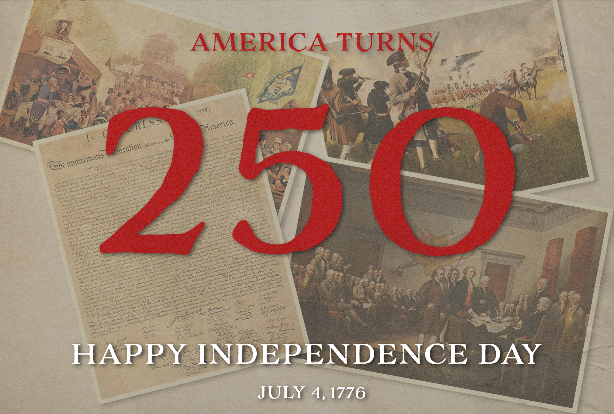
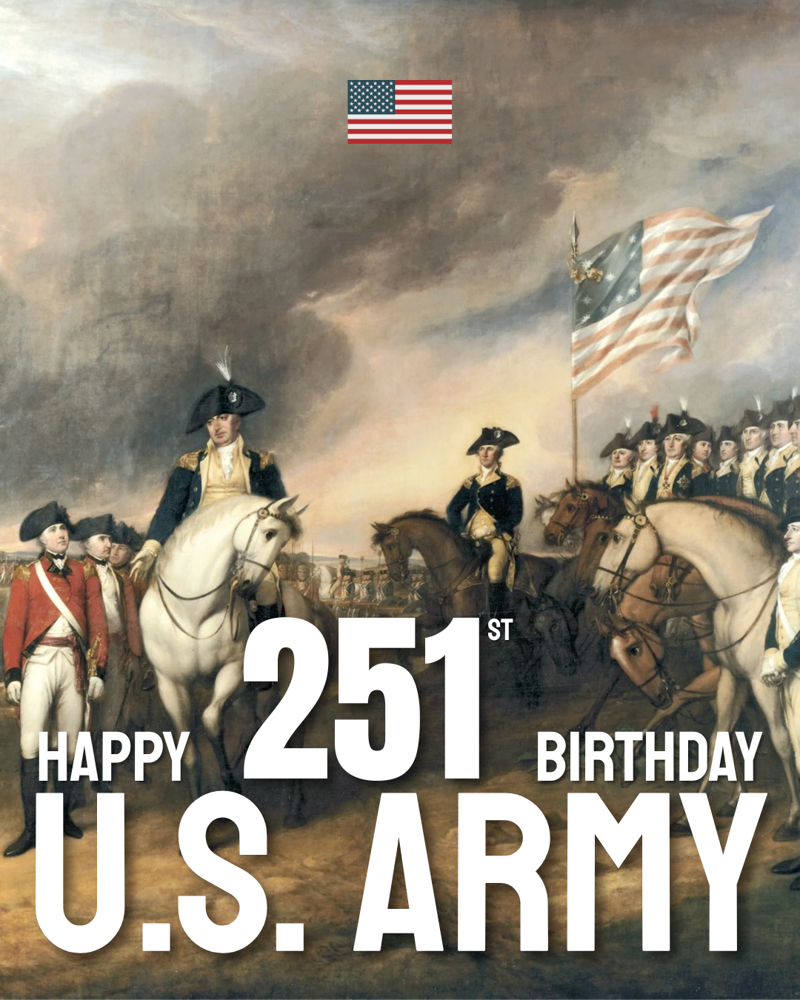
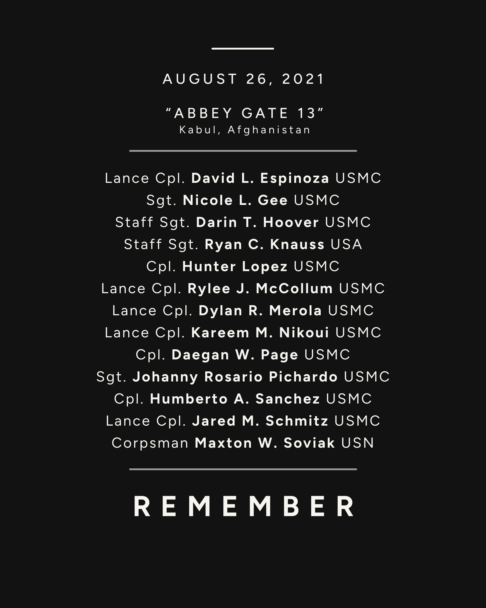

01 / GraphicsHouse of
Representatives
Representatives
← All work
House of Representatives
Social graphics, designed from scratch, for a congressional office.
- Role
- Press Assistant
- Tools
- Adobe Photoshop, Figma, Canva
- Year
- August 2025 - Present
What I did
- Drafted press releases, statements, and media advisories on behalf of a Member of Congress, ensuring accuracy and alignment with communications strategy.
- Built and maintained relationships with local and national press, responding to media inquiries and coordinating interview requests.
- Managed day-to-day digital communications, including website updates and social media content, to strengthen the office’s public presence.


![[Describe this image]](images/HouseOfReps/VE Day copy.png)
